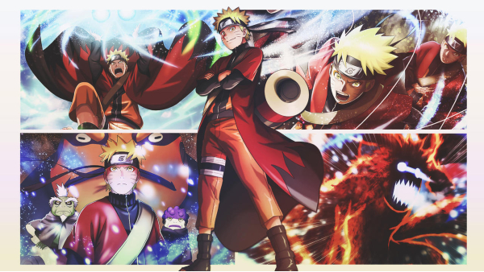
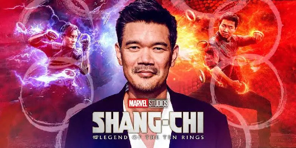

Lionsgate, líder global de conteúdo, firma acordo com Destin Daniel Cretton para dirigir adaptação live-action de Naruto
Tão aguardada adaptação live-action do Naruto chegou!

Lionsgate, líder global de conteúdo, estabeleceu parceria com o renomado diretor e roteirista Destin Daniel Cretton, conhecido por seu trabalho em "Shang-Chi e a Lenda dos Dez Anéis", para escrever e dirigir a aguardada adaptação live-action do clássico mangá Naruto. O anúncio foi feito hoje por Adam Fogelson, presidente do Lionsgate Motion Picture Group.
O filme será baseado no mangá de sucesso criado por Masashi Kishimoto, que vendeu mais de 250 milhões de cópias em mais de 60 países e territórios, tornando-se um dos IPs mais populares do mundo.

Lionsgate/Todos os direitos reservados
Daniel Cretton expressou sua honra em conhecer Kishimoto-san em Tóquio e compartilhou sua empolgação em colaborar e trazer Naruto para as telonas. Ele afirmou: "Foi uma verdadeira honra conhecer Kishimoto-san em Tóquio e ouvir sua visão expansiva para sua criação. Estamos muito entusiasmados em colaborar e trazer Naruto para a tela grande."
Kishimoto-san também expressou sua confiança em Cretton como diretor, afirmando: "Quando ouvi falar do apego de Destin, aconteceu logo depois de assistir a um filme de ação de grande sucesso dele, e pensei que ele seria o diretor perfeito para Naruto. Depois de curtir seus outros filmes e entender que seu forte é criar dramas sólidos sobre pessoas, me convenci de que não existe outro diretor para Naruto."
Fogelson ressaltou a empolgação da Lionsgate com a visão de Cretton para o filme, destacando sua habilidade em entusiasmar tanto os fãs existentes quanto os novos.
Avi e Ari Arad, os produtores do filme, expressaram sua alegria em colaborar com Kishimoto-san e a equipe da Shueisha, ressaltando a honra de trazer Naruto para as telonas sob a bandeira da Lionsgate.
O filme será produzido pela Arad Productions, com Avi Arad, Ari Arad e Emmy Yu atuando como produtores. Cretton e Jeyun Munford também estarão na produção.
Destin Daniel Cretton, conhecido por dirigir "Shang-Chi e a Lenda dos Dez Anéis" e "Short Term 12", foi elogiado por sua habilidade em criar dramas envolventes sobre pessoas. Ele também está definido para dirigir uma sequência de "Shang-Chi".
O filme marca mais uma colaboração entre Cretton e a Lionsgate, após o sucesso de "The Glass Castle". James Myers e Jon Humphrey do estúdio supervisionarão o projeto.
O acordo foi negociado pela Lionsgate, representada por Bonnie Stylides. Cretton é representado pela WME e Goodman, Genow, Schenkman, Smelkinson & Christopher.
Sobre a Lionsgate:
A Lionsgate é uma empresa de entretenimento digital conhecida por sua cultura empreendedora e compromisso com a inovação. Com um portfólio de mais de 20.000 títulos e uma coleção de franquias icônicas de filmes e televisão, a Lionsgate oferece entretenimento ousado e original para públicos em todo o mundo.
Esta parceria promete trazer Naruto para as telonas com ação espetacular e drama profundo, cativando os corações e mentes de fãs em todo o mundo.